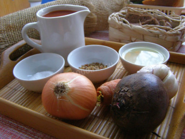
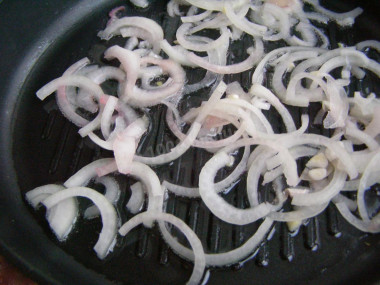
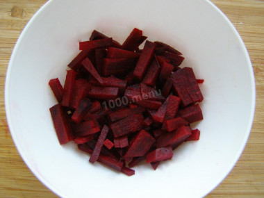
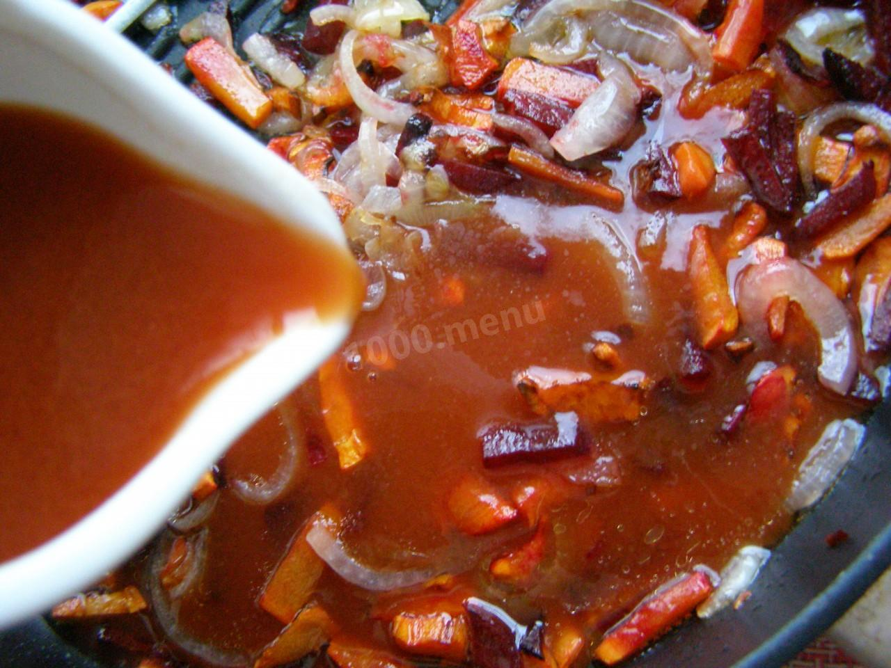
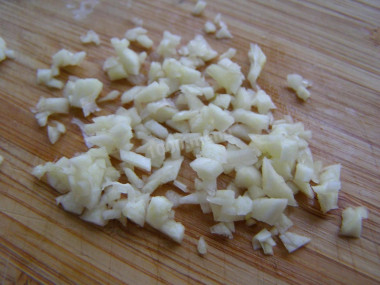
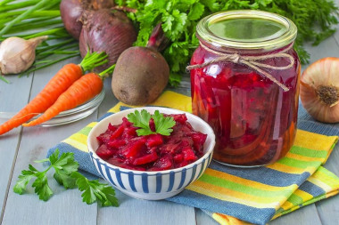

Жарка для борща на зиму
Описание
Ароматная жарка для борща — лучшая заготовка на зиму! Жарка используется как добавка в суп — доводят до кипения и варят 5–10 минут.
Сложность: Легко
Кухня: Домашняя
Ингредиенты
- Морковь — 200 г
- Свекла — 300 г
- Лук — 150 г (1 средняя)
- Чеснок — 3 зубчика
- Томатный сок — 700 мл
- Соль — 1–1.5 ч.л. (≈6–8 г)
- Сахар — 1 ч.л. (≈5 г)
- Специи — по вкусу
- Масло — 2 ст.л. (≈30 г)
Рецепт приготовления

Шаг 1
Подготовьте ингредиенты. Овощи тщательно вымойте с помощью щётки или жесткой мочалки.

Шаг 2
Лук нарежьте перьями и обжарьте до мягкости.

Шаг 3
Добавьте морковь и свёклу, тушите на среднем огне, периодически помешивая.

Шаг 4
Добавьте томатный сок, соль и сахар. Тушите 40–50 минут до нужной густоты.

Шаг 5
Мелко накрошите чеснок или пропустите его через пресс. Добавьте измельченный чеснок, уксус и специи примерно за 10 минут до готовности зажарки. Попробуйте на вкус, скорректируйте соль. Потушите ещё около 10 минут и снимите с огня.

Шаг 6
Готовую зажарку разложите по заранее простерилизованным банкам, закатайте крышками. Переверните банки, укутайте заготовки тёплым одеялом и оставьте при комнатной температуре до постепенного полного остывания. Храните зажарку в прохладном тёмном месте до одного года.